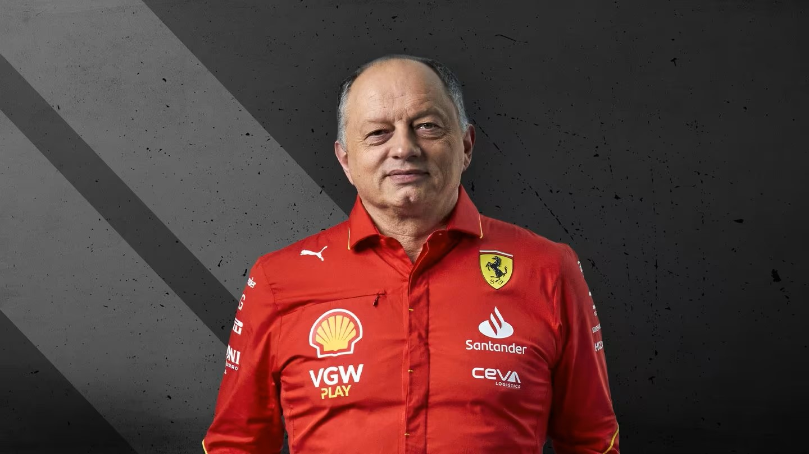
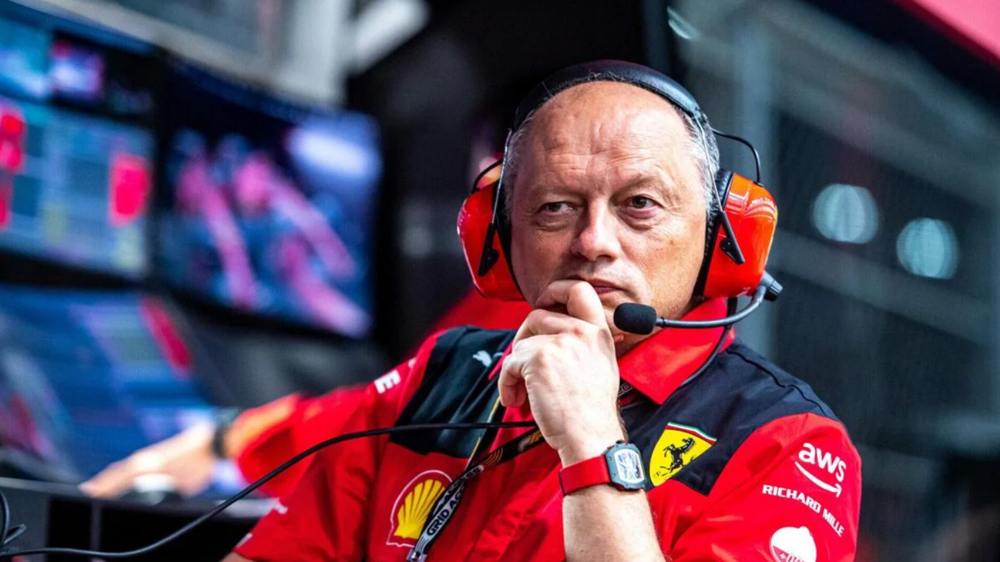

Charles Leclerc, nato il 16 ottobre 1997 a Monte Carlo, è un pilota automobilistico monegasco attualmente in forza alla Scuderia Ferrari in Formula 1. La sua carriera nel motorsport è iniziata nel karting, dove ha mostrato un talento precoce. Nel corso degli anni, ha progredito attraverso le categorie junior, vincendo il campionato GP3 nel 2016 e il campionato di Formula 2 nel 2017. Il suo debutto in Formula 1 è avvenuto nel 2018 con Alfa Romeo Sauber, dove ha dimostrato capacità di guida impressionanti. Nel 2019, è stato promosso alla Scuderia Ferrari, diventando il secondo pilota più giovane nella storia del team. Leclerc è noto per la sua velocità in pista e il suo talento naturale, dimostrando abilità promettenti nel corso della sua giovane carriera in Formula 1.
 